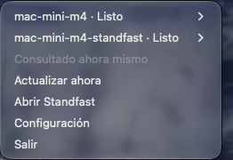
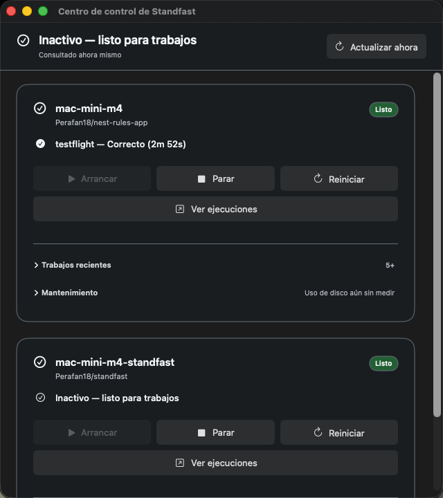
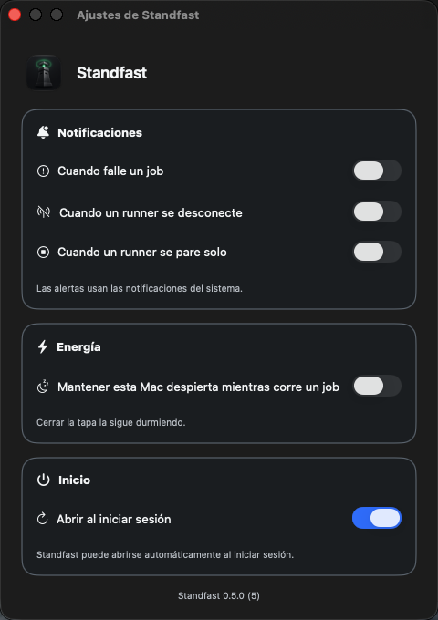

Your runner is up. That doesn’t mean GitHub will send it work.
Standfast is a free menu bar app for Macs that host GitHub Actions runners. It asks launchd whether each runner is alive, asks GitHub whether it still counts on it, and never mixes up the two answers.
One icon answers for every runner on the Mac
The status item shows whichever runner most needs a person, so a glance is enough. Open the menu for one row per runner.
Idle
Registered, connected and waiting for work.Busy
Running a job right now, with which one and for how long.Disconnected
The process is alive, but GitHub cannot see it. No job is coming.Stopped
The service is not running. Start it from the menu or the Control Center.Unknown
Standfast could not tell, and says why: no token and nogh, a refused credential, a rate limit, or no answer. Each has a different fix.Starting
You just started it and GitHub has not acknowledged it yet. Held for 30 seconds.No runners
This Mac has no runners at all, which is not the same as failing to read one.
A runner can be running and still useless
A runner whose registration has lapsed keeps its process running. Activity Monitor still shows it and the service script still says it started. The next job simply never arrives, and you find out when someone asks why a build has been queued for an hour.
$ ./svc.sh status
status actions.runner.acme-widget.build-mac:
/Users/ci/Library/LaunchAgents/actions.runner.acme-widget.build-mac.plist
Started:
48213 0 actions.runner.acme-widget.build-mac
- build-macself-hosted, macOS, ARM64Offline
- build-linuxself-hosted, Linux, X64Idle
Standfast asks both on every refresh and keeps the answers apart. That is why a runner that is up but unreachable gets a state of its own instead of being filed under stopped: the symptom looks the same, and the fix is not.
A glance from the menu, the whole picture in one window


The questions a runner card answers
Which job, and for how long
Running testflight — 1m 20s, usually 2m 50s
Read from the log the runner already writes, at no extra API cost. “Usually” is the median of the last few successful runs of that same job; with fewer than three, there is no estimate at all.
What is waiting for it
With a token, Standfast lists the repository’s queued jobs and counts the ones whose labels this runner carries, by the same rule GitHub uses to hand them out. Organization and enterprise runners say the question cannot be answered there instead of showing an empty queue.
What it costs your disk
| Tool cache | 4.33 GB |
| Repository checkouts | 431 MB |
| Downloaded actions | 16.6 MB |
| Logs | 9.2 MB |
Measured when you ask, broken down by what each folder is for. It offers to delete exactly three things, only while that runner is idle or stopped. Your checkouts and the job’s temporary folder are never offered.
Whether it is out of date
The installed runner is compared with the latest actions/runner release, checked at launch and then at most once a day. GitHub enforces a minimum version for self-hosted runners, and one that falls below it stops getting jobs.
Whether the Mac stays awake
If you switch it on, Standfast holds off idle sleep while a job runs and lets go when the work is done. It also warns when the Mac is running hot. It cannot keep a closed laptop awake; macOS offers no public way to promise that.
When something breaks
Notifications you choose, one by one: a job failed, a runner disconnected, a runner stopped on its own. Start, Stop and Restart leave a receipt on the card saying what actually happened, including “uncertain” when a command timed out.
It finds the runners you already have
A runner installed as a service needs nothing typed into Standfast. It reads the LaunchAgent the runner installed and the .runner file the runner keeps beside itself, and asks GitHub about each runner by its own id.
<key>Label</key>
<string>actions.runner.acme-widget.build-mac</string>
<key>WorkingDirectory</key>
<string>/Users/ci/actions-runner</string>
{
"agentId": 21,
"agentName": "build-mac",
"gitHubUrl": "https://github.com/acme/widget",
"workFolder": "_work"
}
Also watched
- Runners started by hand with
./run.sh, once you add their folder in Settings. Standfast watches them but does not start or stop them. - GitLab runners, from gitlab-runner’s own
config.toml, asked about with a GitLab token you add in Settings. - Ephemeral runner fleets run by a supervisor, from the status snapshot the supervisor publishes.
What you need
- macOS 14 or later, on the Mac that hosts the runners.
- A way to ask GitHub: a token pasted into Settings and kept in your login Keychain, or the GitHub CLI after
gh auth login. Queued work needs the token. - Nothing else. No daemon, no account, no configuration file.

What it never does
- No sudo. A Mac runner is a per-user LaunchAgent, and nothing here needs more than your own account.
- No telemetry. No analytics, no update checks for Standfast itself, and your runner’s logs never leave the Mac.
- No credentials you did not give it. The only tokens it keeps are the ones you paste into Settings, in your login Keychain. Settings says whether one is stored and never shows it.
- No deleting your work. Repository checkouts are never offered for cleanup, and nothing is deleted while that runner has a job.
- It does not register runners or edit their labels. It watches the ones you set up.
- It does not support GitHub Enterprise Server. Every request goes to github.com, so a runner registered there reads Unknown.
- It does not keep a closed laptop awake. Idle sleep, yes; the lid, no.
- Every file it reads, command it runs and request it makes is listed in the security policy.
Install it with Homebrew
Homebrew builds Standfast on your Mac, so it needs Xcode 16 or later. There is no signed download yet.
brew install perafan18/tap/standfast ditto "$(brew --prefix standfast)/Standfast.app" /Applications/Standfast.app open /Applications/Standfast.app
Copy the app again after every upgrade: Spotlight and Launchpad do not look inside Homebrew's folders. Or build it from source with git clone https://github.com/Perafan18/standfast.git, then make run.